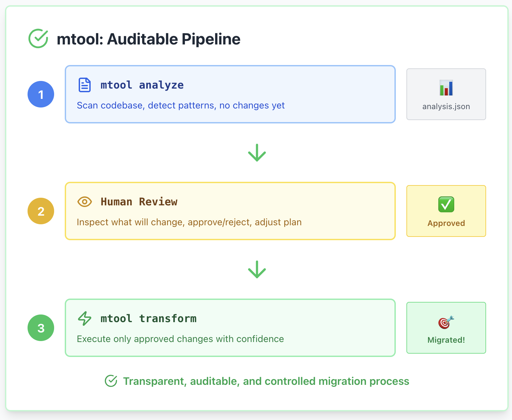
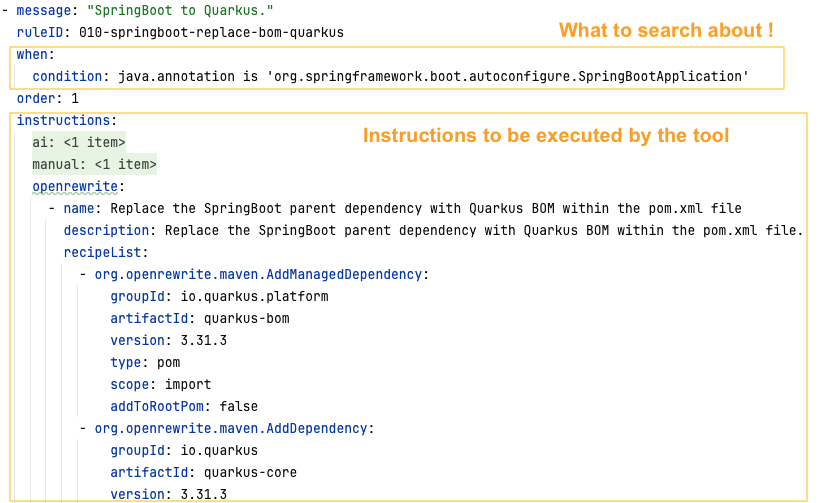

Aurea Munoz Hernandez
Charles Moulliard
"dryRun" or "run" mode
mvn org.openrewrite.maven:rewrite-maven-plugin:dryRun \
-Drewrite.activeRecipes=dev.snowdrop.openrewrite.java.SpringToQuarkus \
-Drewrite.configLocation=rewrite-specific-springboot.yml \
-Drewrite.recipeArtifactCoordinates=dev.snowdrop.mtool:openrewrite-recipes:1.0.5 \
-Drewrite.recipeArtifactCoordinates=org.openrewrite.recipe:rewrite-spring-to-quarkus:0.4.4 \
-Drewrite.recipeArtifactCoordinates=org.openrewrite.recipe:rewrite-java-dependencies:1.51.0
mvn commands
must be executed
# Latest version
jbang app install rewrite@snowdrop/rewrite-client
# Specific version
jbang app install rewrite@snowdrop/rewrite-client/0.2.9
# When coding use your local catalog pointing to the uber jar
jbang app install --catalog jbang-catalog-dev.json rewrite
pushd test-project/simple
# Simple recipe in dryn or run mode
rewrite . -r org.openrewrite.java.format.AutoFormat
# With Java recipe's fields to be set
rewrite . \
-r org.openrewrite.java.search.FindAnnotations \
-o annotationPattern=@org.springframework.boot.autoconfigure.SpringBootApplication
# With additional recipes jar files or GAVs
rewrite /path/to/project --jar /path/to/recipes.jar -r com.example.MyRecipe
popd
pushd test-project/simple
rewrite . -c rewrite.yml
popd
# Or specify path directly
rewrite test-project/simple -c rewrite.yml
import dev.snowdrop.openrewrite.RewriteService;
import dev.snowdrop.openrewrite.Config;
import dev.snowdrop.openrewrite.ResultsContainer;
Config cfg = new Config();
cfg.setAppPath(Paths.get("/path/to/your/project"));
cfg.setRecipes(List.of("org.openrewrite.java.search.FindAnnotations"));
cfg.setRecipeOptions(Set.of("annotationPattern=org.springframework.boot.autoconfigure.SpringBootApplication"));
RewriteService scanner = new RewriteService(cfg);
scanner.init();
ResultsContainer results = scanner.run();
// Access results
RecipeRun run = results.getRecipeRuns().get("org.openrewrite.java.search.FindAnnotations");
// Process datatables, changesets, etc.
@QuarkusTest
public class FindAnnotationTest extends BaseTest {
@Test
void shouldFindAnnotation() throws Exception {
List rows = findDataTableRows(run, "SearchResults", SearchResults.Row.class);
assertEquals(1, rows.size());
SearchResults.Row record = rows.getFirst();
assertEquals("src/main/java/com/todo/app/AppApplication.java", record.getSourcePath());
assertEquals("@SpringBootApplication", record.getResult());
assertEquals("Find annotations `org.springframework.boot.autoconfigure.SpringBootApplication`", record.getRecipe());
Quarkus Migration Tool Project - mtoolQuarkus Client able to analyze, generate a migration plan, and transform


# Scan and analyse using (pre)conditions
mtool analyze ./applications/spring-boot-todo-app -r ./cookbook/rules/quarkus-spring-precondition
mtool analyze ./applications/spring-boot-todo-app -r ./cookbook/rules/quarkus-spring
# Visualize the matching's ascii table generated in the console
# Quick review of the report = migration plan enerated with instructions
# Show that the Spring Boot Todo app is working
mvn clean package spring-boot:run
firefox localhost:8081
# Dry run - generates patch files
mtool transform ./applications/spring-boot-todo-app \
-p openrewrite --dry-run
# Apply transformation
mtool transform ./applications/spring-boot-todo-app \
-p openrewrite
mvn clean package -DskipTests quarkus:dev
firefox http://localhost:8080/q/dev-ui/extensions
# Test the API
curl http://127.0.0.1:8080/home
curl -X POST http://localhost:8080/home \
-H "Content-Type: application/json" \
-d '{
"title": "Prepare migration to Quarkus. Task 1",
"description": "Migrating Spring Boot TO DO to Quarkus. Task 1",
"dueDate": "2025-12-24"
}'
curl -X POST http://localhost:8080/home \
-H "Content-Type: application/json" \
-d '{
"title": "Prepare migration to Quarkus. Task 2",
"description": "Migrating Spring Boot TO DO to Quarkus. Task 2",
"dueDate": "2025-12-24"
}'
# Scan and analyse using (pre)conditions
mtool analyze ./applications/quarkus-resteasy-classic-app -r ./cookbook/rules/quarkus-resteasy-reactive
# Visualize the matching's ascii table generated in the console
# Quick review of the report = migration plan with instructions
# Dry run - generates patch files
mtool transform ./applications/quarkus-resteasy-classic-app \
-p openrewrite --dry-run
# Apply transformation
mtool transform ./applications/quarkus-resteasy-classic-app \
-p openrewrite
mvn clean quarkus:dev
firefox http://localhost:8080/q/dev-ui/extensions
# Test the API
curl http://localhost:8080/books
curl -X POST http://localhost:8080/books \
-H "Content-Type: application/json" \
-d '{
"title": "Quarkus in Action",
"author": "Martin Štefanko and Jan Martiška",
"dueDate": "2022-03-10",
"isbn": "9781633438958",
"publicationYear": 2025
}'
Thank you!